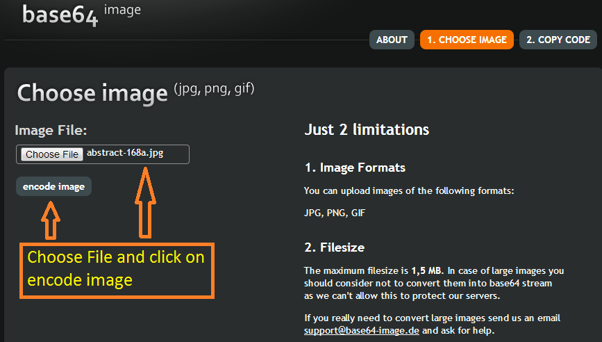
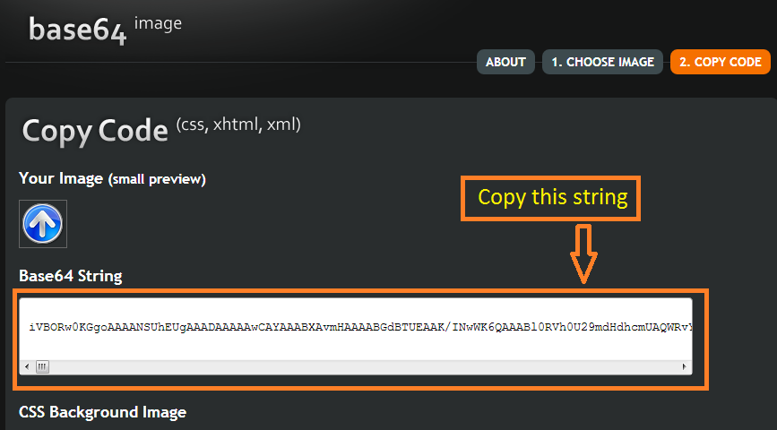
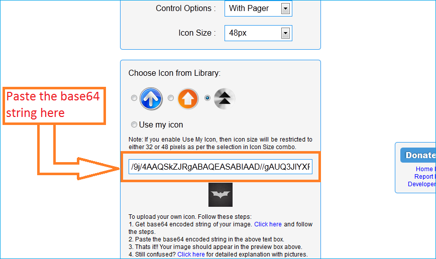

Steps to upload your own image.
Step 1:
Open www.base64-image.de and go to Step 2.
Step 2: Select Image to be uploaded

Step 3: Copy base64 string

Step 4: Paste it in the settings

Step 4: That's it. You are done. :)
Still need help. Leave a comment to this discussion forum.